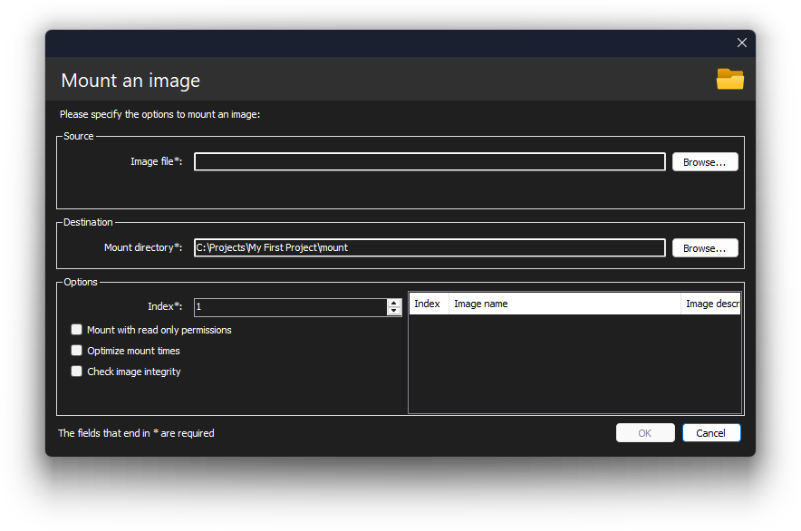
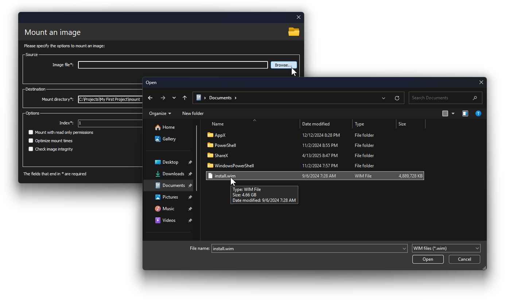

Ya sea que sea nuevo en el mantenimiento de imágenes o venga de otros programas, esta guía le ayudará a aprender las herramientas de implementación de Windows y a configurar su entorno de trabajo.
Comprender las herramientas de implementación y configuración de Windows
Para empezar, tendremos que retroceder hasta la época de Windows Vista para entender sus herramientas de configuración y despliegue. No se preocupe, esta no es una sección larga.
Antes de este sistema operativo, el CD de instalación contenía todos los archivos de Windows de forma comprimida, pero no una instalación completa en un único archivo. Por ejemplo, cada archivo de 3D Pinball estaba comprimido en su propio archivo. Esto significaba que necesitaba el CD en todo momento durante el proceso de instalación, hasta el final. Si lo expulsaba durante la instalación, le pedía que lo insertara de nuevo:

Las transferencias constantes desde el CD al disco duro también hacían que la instalación tardara bastante.
Dadas estas desventajas, Microsoft inició el trabajo en un nuevo sistema de instalación durante el desarrollo de Windows Vista (nombre en código Longhorn) que instalaría Windows en menos de 15 minutos:
Myers dice que el objetivo es que una instalación desatendida de Longhorn tome menos de 15 minutos de principio a fin. Comparado con los 45 a 60 minutos de instalación de Windows XP, eso es asombroso, aunque las pre-alphas de Longhorn aún son bastante lentas.
— Paul Thurrott, "Longhorn Setup and Deployment Strategies"
Esto dio lugar al formato de archivo WIM (Windows Imaging), que es un único archivo que contiene una o más instalaciones completas de Windows. Esto significa que el equipo solo necesita transferir desde el medio de instalación al disco duro una sola vez: durante la expansión de la imagen.
Obviamente, al trabajar con nuevos formatos y estándares de despliegue, la tecnología existente no funcionaría, por lo que Microsoft incluyó un conjunto de herramientas de despliegue, administración y mantenimiento como parte del AIK (Automated Installation Kit) de Windows Vista.
Durante el desarrollo de Windows 7, Microsoft escuchó los comentarios de los clientes y consolidó todas estas herramientas en una única aplicación que también se integraría con el sistema operativo. Llamada DISM (Deployment Image Servicing and Management), este programa puede realizar todas las funciones encontradas en las herramientas previas de Vista, y muchas más, gracias a mejoras en versiones posteriores de Windows.
DISM es una utilidad de línea de comandos cuya sintaxis puede parecer difícil. Sin embargo, existen varias interfaces de usuario disponibles; esta es una de ellas.
Qué ofrece DISMTools
Como interfaz de usuario para DISM, DISMTools ofrece características interesantes:
- Es el primer UI basado en proyectos, lo que facilita la organización de su trabajo
- Proporciona información detallada de forma rápida y ofrece herramientas que le ayudan con sus tareas de administración. Más información en la Etapa 2 de este tour
- Ofrece herramientas integradas para el despliegue y la prueba de imágenes. Más información en la Etapa 3 de este tour
En esta etapa aprenderá las tareas básicas.
Crear su primer proyecto y montar su primera imagen de Windows
Para crear su primer proyecto, simplemente haga clic en el enlace "Nuevo proyecto..." en la pantalla principal, o vaya a Archivo > Nuevo proyecto...
Se mostrará el siguiente cuadro de diálogo:

Escriba el nombre y la ubicación de su proyecto. Puede elegir el nombre que desee. Después haga clic en Aceptar.
Tras crear el proyecto, verá la vista del proyecto:

Antes de poder hacer algo con su nuevo proyecto, necesita montar una imagen de Windows. Para ello, haga clic en el botón Montar imagen.... Verá el siguiente cuadro de diálogo:
Especifique una imagen de Windows, la ubicación donde montarla y el índice. Puede configurar opciones adicionales, pero en la mayoría de los casos no son necesarias.
¿Cómo obtengo una imagen de Windows?
Las imágenes de Windows normalmente se encuentran en el archivo install.wim, que está en la carpeta sources del medio de instalación de Windows. También puede encontrar imágenes en el archivo install.esd, que es una versión comprimida del archivo WIM. Este archivo suele encontrarse en la misma ubicación que el WIM.

Después de copiarlo, especifíquelo en el cuadro de diálogo, así:
Configure los ajustes restantes que se mencionaron antes y haga clic en Aceptar. Luego espere a que finalice la operación.
A lo largo del uso de DISMTools verá este panel de progreso. Aquí puede ver los registros de operación y la salida de la línea de comandos de DISM. Haga clic en uno de los enlaces a continuación para ver ambas secciones:

|
|
Puede cambiar a cualquiera de las secciones haciendo clic en los botones de la parte inferior izquierda.
Después de completar la operación de montaje, volverá a la vista del proyecto, pero con más elementos para explorar:

Ya lo hice. ¿Y ahora?
Tras montar su imagen, puede continuar de 2 maneras:
- Por su cuenta, o
- Con ayuda de las siguientes Etapas de este tour
Si desea continuar con el tour, haga clic en el botón Etapa 2 en la parte superior derecha para ver su versión en texto.
Si desea continuar el tour en formato vídeo, haga clic aquí.